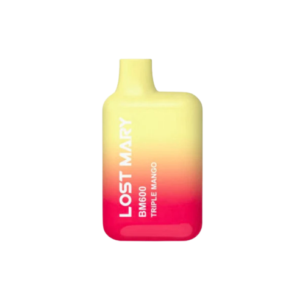

Lost Mary vapes are different to all other vapes as they deliver a great
taste in a small product. Most other vapes are large and bulky. Lost Marys
have become very popular due to the design of them.

The matte feeling and overall texture is the main focal point of the lost mary.
The overall attention to design is what many vape users want in their vape.
Many users just simply like the look of them and want to be different rather than having the
regular old elfbar